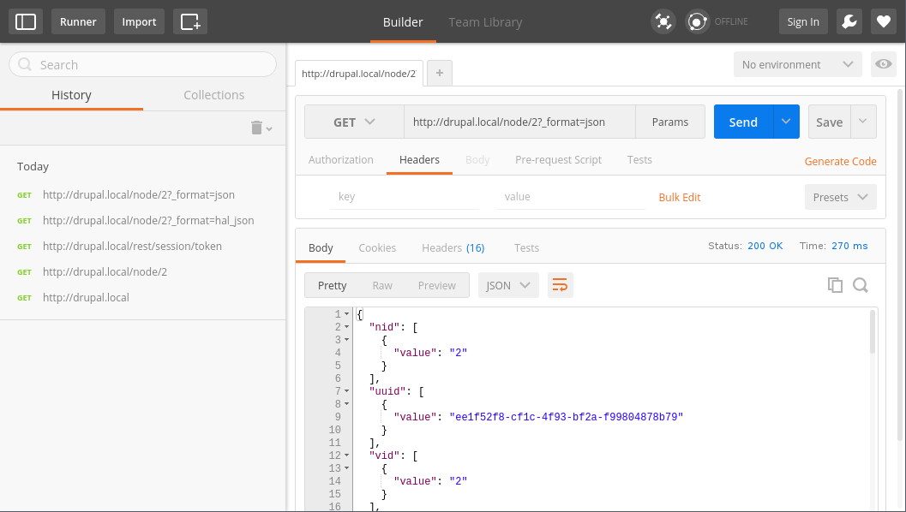
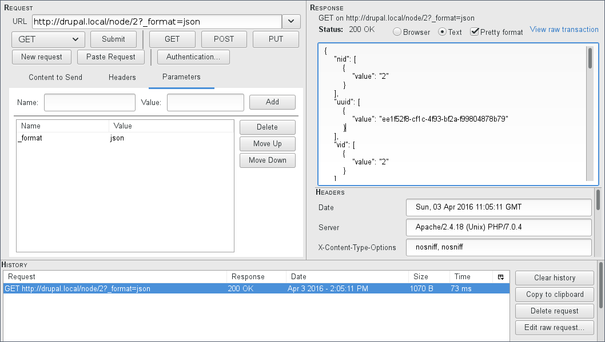
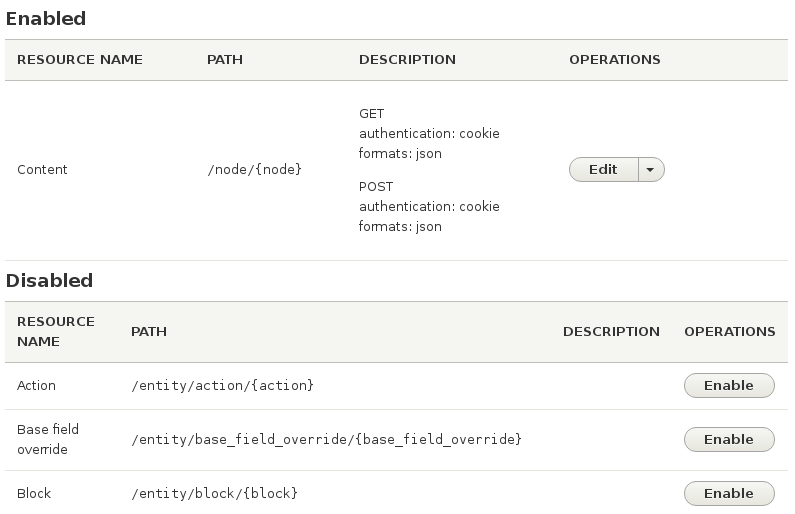
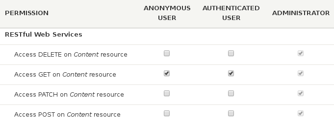

RESTful web services

Slides
https://github.com/pfrenssen/d8-training
branch: rest-api
REST?
REpresentational
State
Transfer
What is REST?
- Software architecture
- Resource based (using URIs)
- Communication over HTTP
- Introduced by Roy Fielding in 2000
What is REST?
The 6 constraints
- Client-server
- Stateless
- Cache
- Uniform interface
- Layered system
- Code-on-demand
http://www.ics.uci.edu/~fielding/pubs/dissertation/rest_arch_style.htm
Why use REST?
- Standard CRUD implementation
- Easy to use
- Widely supported
- Built in to popular JS frameworks
CRUD over HTTP
- Create: POST
- Read: GET
- Update: PATCH (or PUT)
- Delete: DELETE
REST API first look: drupal.org
- https://www.drupal.org/drupalorg/api
- Exposes projects, issues, users, nodes, comments, ...
- Read-only
- Anonymous access (fair use)
- Returns data in JSON and XML formats
- Supports pagination and sorting
- Built in Drupal 7 with the RESTful Web Services module
An example request
https://www.drupal.org/api-d7/user.json?field_country=Belgium&sort=uid&limit=10
- A JSON object is returned
- Contains pagination data and a list of users
- User objects contain many fields
- Can be filtered and sorted by field
- Do all fields make sense?
REST client
- Desktop application
- Browser plugin
- Command line client
- Curl
Doing requests with Curl
- Powerful CLI data transfer tool
- Available on all platforms
- Does a lot more than just HTTP
- Good for doing quick tests
GET Example
$ curl 'https://www.drupal.org/api-d7/node.json?limit=1'
Tip: add the --include flag to display HTTP headers
POST Example
$ curl \
--header "Content-Type: application/json" \
--request POST \
--data-binary '{"username":"pfrenssen","password":"hunter2"}' \
http://my.domain/api/login
PATCH Example
$ curl \
--header 'Content-type: application/hal+json' \
--header 'X-CSRF-Token: YmFH42rZPtRLzl5ZrA5GyKKlskqqWsJQEcme0yWR888' \
--request PATCH \
--user pfrenssen:hunter2 \
--data-binary '{"title":[{"value":"Updated node title"}]}' \
http://my.domain/node/123?_format=hal_json
Tip: get a token from /rest/session/token
DELETE Example
$ curl \
--header 'X-CSRF-Token: YmFH42rZPtRLzl5ZrA5GyKKlskqqWsJQEcme0yWR888' \
--request DELETE \
--user pfrenssen:hunter2 \
http://my.domain/node/123?_format=hal_json
Tip: get a token from /rest/session/token
Browser plugins
Postman for Chromium

HttpRequester for Firefox
https://addons.mozilla.org/firefox/addon/httprequester

Browser plugin for viewing JSON
- Chromium: JSON Formatter
- Firefox: JSONView
Postman for Chromium
HttpRequester for Firefox
Browser plugin for viewing JSON
- Chromium: JSON Formatter
- Firefox: JSONView
Stuff you need
- Drupal 8
- Drush
- Console
- REST client
Drupal 8
- Use standard profile
- Enable the REST module
- Install REST UI contrib module
Drush
Console
Exercise: Consuming a REST service
- Use the Drupal.org REST API
- Retrieve 5 change records with Guzzle
- Display in a block
Create a module with Drupal Console
$ drupal generate:module
Enter the new module name:
> Change records
Enter module description [My Awesome Module]:
> Displays change records from drupal.org.
Do you confirm generation? (yes/no) [yes]:
> yes
Generated or updated files
1 - modules/custom/change_records/change_records.info.yml
2 - modules/custom/change_records/composer.json
(all default options are omitted)
Create a block part 1
$ drupal generate:plugin:block
Enter the module name [devel]:
> change_records
Plugin class name [DefaultBlock]:
> ChangeRecordsBlock
Do you want to load services from the container (yes/no) [no]:
> yes
Enter your service [ ]:
> http_client
Create a block part 2
Do you want to generate a form structure? (yes/no) [yes]:
> yes
Type [ ]:
> number
Input label:
> Number of change records to show
Input machine name [number_of_change_records_to_show]:
> limit
Default value [ ]:
> 5
Create a block part 3
Do you confirm generation? (yes/no) [yes]:
> yes
Generated or updated files
1 - modules/custom/change_records/src/Plugin/Block/ChangeRecordsBlock.php
Rebuilding cache(s), wait a moment please.
[OK] Done clearing cache(s).
Requesting data from the REST API
src/Plugin/Block/ChangeRecordsBlock.php
public function build() {
$options = [
'query' => [
'type' => 'changenotice',
'limit' => $this->configuration['limit'],
'status' => 1,
'sort' => 'created',
'direction' => 'DESC',
],
];
$result = $this->http_client->get('https://www.drupal.org/api-d7/node.json', $options);
$change_records = json_decode($result->getBody())->list;
// ...
}
Requesting data from the REST API
src/Plugin/Block/ChangeRecordsBlock.php
public function build() {
// ...
$items = [];
foreach ($change_records as $change_record) {
$items[] = [
'#type' => 'link',
'#title' => $change_record->title,
'#url' => Url::fromUri($change_record->url),
];
}
return [
'#theme' => 'item_list',
'#items' => $items,
'#list_type' => 'ol',
];
}
Modeling REST data as entities
- json_decode() results in a plain object (meh)
- Entities are the ideal match in Drupal
- Integrates well with everything
- Local caching
- Importing / exporting
- Requires the Serialization module
Modeling REST data as entities
- Create custom entity representing REST data
- Inject the 'serializer' service
- Deserialize the REST data into an entity
$data = $this->httpClient->get('https://www.drupal.org/api-d7/node/2692565.json');
$serializer = \Drupal::service('serializer');
$entity = $serializer->deserialize($data, 'Drupal\change_records\Entity\ChangeRecord', 'json');
Providing a REST API in Drupal
- Why use Drupal?
- Designing a REST API
- REST modules
- Programmatically creating endpoints
- Headless Drupal
Why use Drupal?
- No need to write custom code
- Powerful data modeling UI
- Versioning
- Caching
- Pagination
- Flood control
- Sorting
- Filtering
- Awesome content authoring tools
Designing a REST API
GET /api/v1/books- Lists booksGET /api/v1/books/123- Retrieve a bookPOST /api/v1/books- Create a bookPATCH /api/v1/books/123- Update a bookDELETE /api/v1/books/123- Delete a book
Designing a REST API
GET /api/v1/books/123/chapters- Lists chaptersGET /api/v1/books/123/chapters/456- Retrieve a chapterPOST /api/v1/books/123/chapters- Create a chapterPATCH /api/v1/books/123/chapters/456- Update a chapterDELETE /api/v1/books/123/chapters/456- Delete a chapter
REST related modules
- RESTful Web Services
- REST UI
- HAL
- HTTP Basic Authentication
- Views
RESTful Web Services module
- Part of Drupal 8 core
- Depends on Serialization
- No user interface
- Only nodes exposed by default
- Pluggable formats (JSON, XML, ...)
- Flexible authentication methods
- Resource plugin type
- Views plugins
- Hooks to alter resources and URIs
REST UI module
- User interface for the REST module
- Supports all content entities
- Configure supported data formats
- Configure authentication methods
- Configure HTTP methods
- Optional alternative to raw config
Using REST UI
/admin/config/services/rest

Permissions
- Available for every enabled entity
- Separate permission per HTTP method

HAL module
- Adds support for Hypertext Application Language
- Adds formats "application/hal+json" & "application/hal+xml"
- Provides location of itself and relations (_links)
- Describes embedded resources (_embedded)
HAL Links
Always provide a link to yourself with _self
{
"_links": {
"self": {
"href": "http://my.domain/users?page=3"
}
}
}
HAL Links
Paging
{
"_links": {
"first": {
"href": "http://my.domain/users"
},
"prev": {
"href": "http://my.domain/users?page=2"
},
"next": {
"href": "http://my.domain/users?page=4"
},
"last": {
"href": "http://my.domain/users?page=133"
}
}
}
HAL Embedded Resources
{
"_embedded": {
"profile_pictures": [
{
"_links": {
"self": {
"href": "http://my.domain/files/123"
}
},
}
],
}
}
HTTP Basic Authentication
- Small core module
- Allows to authenticate over HTTP Basic Auth
Authorization: Basic dXNlcjpwYXNz- Credentials are base 64 encoded: only use over HTTPS!
Headless Drupal
- Using Drupal as a web service
- Decoupling of editing and displaying content
- Frontend implemented separately
- Pull data over RESTful API
Why go headless?
- Frontend changes faster than backend
- Front end devs prefer JS
- Fast iteration and delivery
- Deliver content to microsites
- Deliver content to any platform
- Broadcasting to multiple targets
- Protect data integrity with REST API
- Provide a rich and powerful CMS